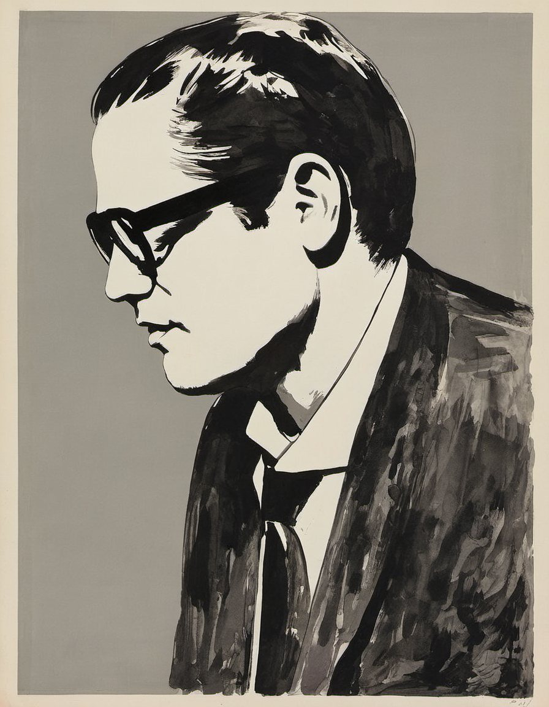
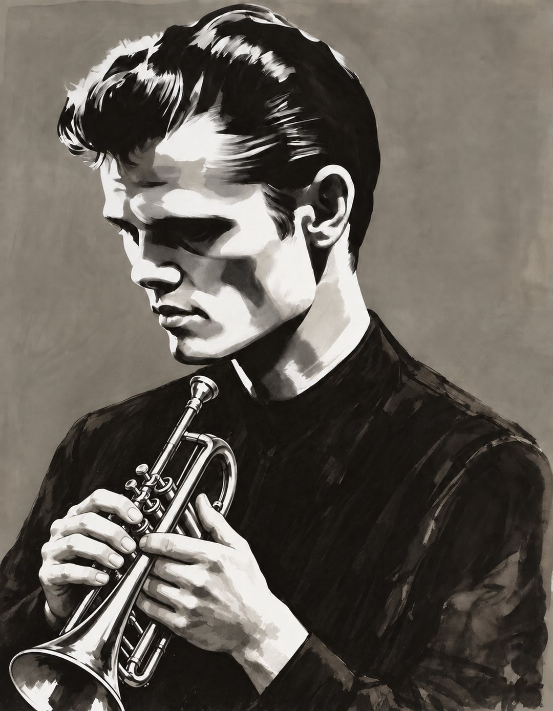
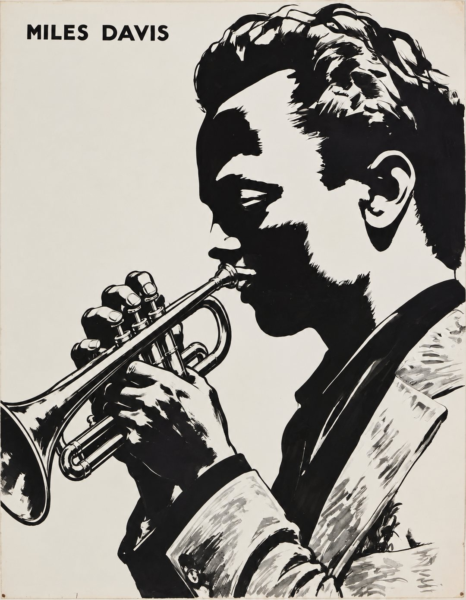
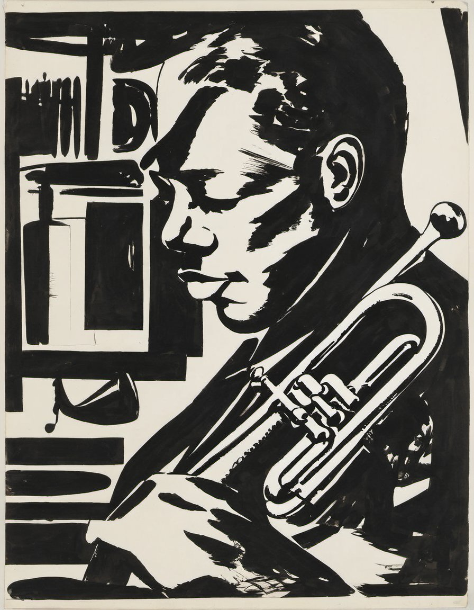
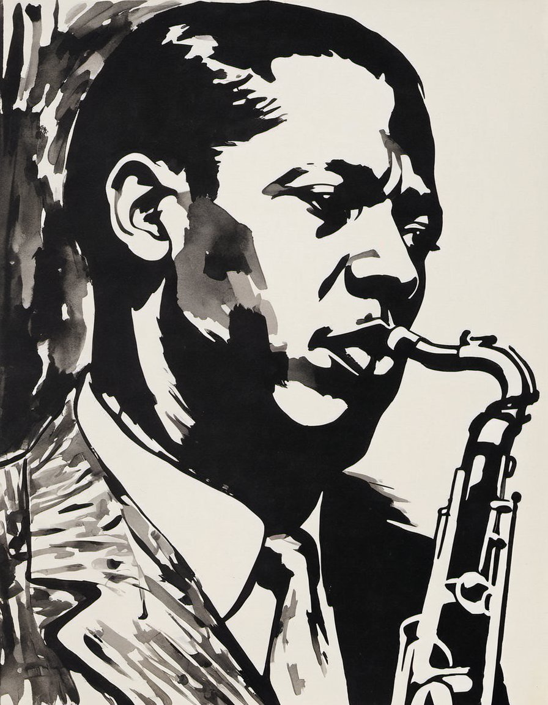

So What, a designer & developer portfolio
See the workA designer & developer portfolio
Works
01 to 05
Work
01. Bill Evans — 빌 에반스

02. Chet Baker — 쳇 베이커

03. Miles Davis — 마일스 데이비스

04. Clifford Brown — 클리포드 브라운

05. John Coltrane — 존 콜트레인

Contact
Have a project in mind? Send an email and let's talk.